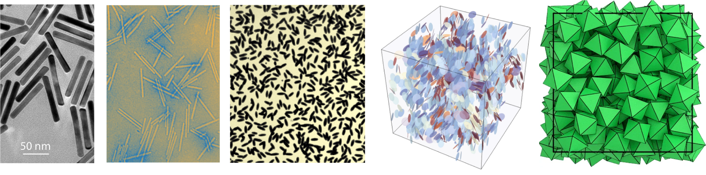

Complex Disordered Systems
Anisotropy and orientational order
What are Liquid Crystals?
- Intermediate phases between liquids and crystals
- Exhibit orientational order without full positional order
- Formed by anisotropic particles (rods, ellipsoids, plates)
- Key property: decoupling of orientational and translational degrees of freedom
Types of Order
Positional order: Regular arrangement of particle positions (lattice)
Orientational order: Angular alignment of particles
| Crystal |
Yes (3D) |
Yes |
| Liquid |
No |
No |
| Liquid Crystal |
Partial/No |
Yes |
The strength of the ordering is determined by the decay of correlation functions:
- in liquids we have at best short range order (expoential decay of the oscillations in the g(r))
- in crystals we have long-range order — correlations do not decay (sharp Bragg peaks in S(\mathbf{k}) and g(r)); this order is only disrupted by defects (dislocations, grain boundaries) on macroscopic scales
Anisotropic Particles
Many natural and artificial systems have anisotropy
Golden nanorods, tobacco virus rods , ellipsoidal silica-coated hematite particles, hard platelets in the isotropic phase, and an arrangement of hard octahedra
Liquid Crystal Phases
- Isotropic fluid: No long-range order (like normal liquids)
- Nematic phase: Orientational order, no positional order.
- Particles align along a common direction: the director \mathbf{n}
- Smectic phase: Layered structure with orientational order
- Positional order in 1D (layers)
- Liquid-like within layers
- Columnar phase: Particles stack into columns
- Crystal: Full 3D positional + orientational order
- Chiral nematic (Cholesteric): Director forms a helix

Different liquid crystalline phases, from Doostmohammadi and Ladoux, Trends in Cell Biology (2002)
Phase Comparison
| Isotropic |
No |
No |
| Nematic |
No |
Yes (long-range) |
| Smectic |
Yes (1D: layered) |
Yes |
| Columnar |
Yes (2D: columns) |
Yes |
| Cholesteric |
No |
Yes (helical) |
| Crystal |
Yes (3D: lattice) |
Yes |

Orientation and order in various phases, from Andrienko, Journal of Molecular Liquids (2018)
Phase Comparison: Textures and Defects

Examples of phases/textures: (a) Nematic with surface point defects. (b) Thin nematic film on isotropic substrate. (c) Thread-like nematic texture. (d) Cholesteric fingerprint (helical axis in plane). (e) Short‑pitch cholesteric (standing helix) with vivid colors. (f) Long-range cholesteric DNA alignment in a magnetic field. (g, h) Focal conic textures of chiral smectic A. (i) Focal conic texture of chiral smectic C. (j) Hexagonal columnar spherulitic texture. (k) Rectangular discotic phase. (l) Hexagonal columnar phase. From Andrienko, Journal of Molecular Liquids (2018)
Orientation and director
Orientation of a rigid rod is described by a unit vector \mathbf{u} along its long axis
The particles are head-tail symmetric, so they have a centre of symmetry
Because \mathbf{u} and -\mathbf{u} are equiprobable, on average \langle \mathbf{u}\rangle=0
Vectorial order parameter is zero. The next non-trivial invariant is a second rank tensor
| Scalar |
0 |
Scalar nematic S (degree of alignment), e.g., S = ⟨P2(cos θ)⟩ |
| Vector |
1 |
Polarization or magnetization vector P / M (polar order) |
| Second‑rank tensor |
2 |
Matrices, Alignment tensor Q_{ij} (nematic order) |
| Third‑rank tensor |
3 |
Octupolar / tetrahedral order T_{ijk} |
The Nematic Order Parameter
For head-tail symmetric rods, we cannot simply average orientations.
Instead, construct the alignment tensor
\mathbf{Q}=\dfrac{d}{2}\left\langle\mathbf{u}_i \otimes \mathbf{u}_i-\dfrac{1}{d}\mathbf{I}\right\rangle
- we make it traceless by removing the identity
- we make it include quadratic combinations (it is as second moment, essentially the covariances)
- \otimes is the outer product, giving a d\times d matrix:
\mathbf{u} \otimes \mathbf{u} =
\begin{pmatrix}
u_1 u_1 & u_1 u_2 & \cdots & u_1 u_d \\
u_2 u_1 & u_2 u_2 & \cdots & u_2 u_d \\
\vdots & \vdots & \ddots & \vdots \\
u_d u_1 & u_d u_2 & \cdots & u_d u_d
\end{pmatrix}
where d is dimensionality, \mathbf{u}_i is the unit orientation vector. For us, d=2,3
2D Nematic Order Parameter
In two dimensions, the director is simply characterised by the angle \psi expressed as
\psi = \frac{1}{2} \operatorname{atan2}(\sin{2\theta_i}, \cos{2\theta_i}).
and the nematic order parameter is simply
\mathcal{S}=\sqrt{\left\langle\cos 2 \theta_i\right\rangle^2+\left\langle\sin 2 \theta_i\right\rangle^2}
3D Nematic Order Parameter
In 3D, choosing coordinates along director \mathbf{n}:
\mathcal{S}=\dfrac{1}{2} \left\langle 3\cos ^2 \theta_i-1\right\rangle
where \theta_i is angle between particle i and director.
This uses the Legendre polynomial P_2(\cos\theta) to enforce head-tail symmetry.
- Lowest nontrivial rotationally‑invariant scalar that is even under \mathbf{n}\to -\mathbf{n}
| 0 |
P_0(x)=1 |
Yes (even: P_0(-x)=P_0(x)) |
| 1 |
P_1(x)=x |
No (odd: P_1(-x)=-P_1(x)) |
| 2 |
P_2(x)=\dfrac{1}{2}(3x^2-1) |
Yes (even: P_2(-x)=P_2(x)) |
| 3 |
P_3(x)=\dfrac{1}{2}(5x^3-3x) |
No (odd: P_3(-x)=-P_3(x)) |
| 4 |
P_4(x)=\dfrac{1}{8}(35x^4-30x^2+3) |
Yes (even: P_4(-x)=P_4(x)) |
Landau-de Gennes mean field theory
Using the tensorial order parameter one can express a Landau theory of the isotropic-to-nematic transition (the simplest form of orientational order appearing in liquid crystals).
Leveraging that \mathcal{S} is an eigenvalue of \mathbf{Q}, i.e. \mathbf{Qn} = S\mathbf{n} we have
\mathbf{Q}=\mathcal{S}\left(\mathbf{n} \otimes \mathbf{n}-\frac{1}{d} \mathbf{I}\right)
If we choose z to be the axis along teh director \mathbf{n} then explicitly
\mathbf{Q}=\mathcal{S}\left(\begin{array}{ccc}
-\frac{1}{3} & 0 & 0 \\
0 & -\frac{1}{3} & 0 \\
0 & 0 & \frac{2}{3}
\end{array}\right)
Landau-de Gennes mean field theory
We want to characterise the deviations from the director’s orientation.
We can think of compiling a probability distribution p(\Omega) of finding a rod with pair of polar angles \Omega=(\theta,\phi) in a coordinates system with polar axis along \mathbf{n}.
- Note: the nematic phase has cylindrical symmetry around \mathbf{n}
- Hence, we have no dependency in the azimuthal angle \phi but only on \theta.
So, by definition of an average, the orientational order parameter reads
\begin{align}\mathcal{S}&=\dfrac{3}{2}\left\langle(\mathbf{u} \cdot \mathbf{n})^2-\frac{1}{3}\right\rangle = \dfrac{1}{2}\langle 3 \cos^2\theta-1\rangle=\langle P_2(\cos\theta)\rangle\\
&=2\pi \int_0^{\pi}P_2(\cos\theta)p(\theta)\sin\theta d\theta
\end{align} where we used the Jacobian in spherical coordinates.
Landau-de Gennes mean field theory
The phenomenological Landau-de Gennes approach is to construct a generic free energy density as an expansion in scalar combinations of the tensor \mathbf{Q} (of which \mathcal{S} is an example)
f=f_0+\frac{A}{2} Q_{i j} Q_{j i}-\frac{B}{3} Q_{i j} Q_{j k} Q_{k i}+\frac{C}{4}\left(Q_{i j} Q_{i j}\right)^2
or in more compact form
f=f_0+\frac{A}{2} \operatorname{tr} \mathbf{Q}^2-\frac{B}{3} \operatorname{tr} \mathbf{Q}^3+\frac{C}{4}\left(\operatorname{tr} \mathbf{Q}^2\right)^2
- Notice that all the indices are contracted!
- A, B, C are phenomenological constants (and cannot be immediately linked to microscopic properties of the anisotropic particles)
Landau-de Gennes mean field theory
According to our earlier 3D definitions
\operatorname{Tr}\left(\mathbf{Q}^2\right)=\frac{2}{3} S^2 \quad,\quad
\operatorname{Tr}\left(\mathbf{Q}^3\right)=\frac{2}{9} S^3
So
f=f_0+\frac{A}{2} \operatorname{tr} \mathbf{Q}^2-\frac{B}{3} \operatorname{tr} \mathbf{Q}^3+\frac{C}{4}\left(\operatorname{tr} \mathbf{Q}^2\right)^2
becomes
f=f_0+\frac{A}{3}S^2-\frac{2B}{27}S^3+\frac{C}{9}S^4
Landau-de Gennes theory result
We can use the Landau phase transition approach.
We can expand A,B,C around a reference temperature T^\ast :
- A(T)=a\left(T-T_*\right)+\cdots
- B(T)= b+\dots
- C(T)=c+\dots, with a,b,c>0 to preserve the most relevant terms.
and obtain
f-f_0=\frac{a}{3}\left(T-T^{\ast}\right) S^2-\frac{2 b}{27} S^3+\frac{c}{9} S^4 .
The cubic term implies that there is a temperature range where two minima coexist:
- S_1=0: isotropic
- S_2>0: nematic
First order phase transition. The cubic terms prevents the free energy from having an inflection at S=0 (the free energy nver gets truly flat)
Landau-de Gennes theory result
The transition temperature is
T_{N I}=T^{\ast}+\frac{b^2}{27 a c}
while T^{\ast} is a material dependent temperature, identifying instability (spinodal).
Aside : constrained optimisation with Lagrange multipliers
Many physics problems can be cast in terms of constraiend optimisation
| Mechanics |
Minimize action S=\int L dt |
Energy conservation |
| Thermodynamics |
Maximize entropy S |
Fixed total energy E |
| Electromagnetism |
Minimize energy |
Gauss’s law \nabla \cdot \mathbf{E} = \rho/\epsilon_0 |
| General Relativity |
Minimize Einstein-Hilbert action |
Metric signature constraint |
| Liquid Crystals |
Minimize Frank energy |
Director normalization \|\mathbf{n}\|=1 |
| Statistical Mechanics |
Maximize partition function |
Micro/Gran/canonical ensembles |
| Optics |
Minimize optical path (Fermat) |
Snell’s law at interfaces |
Method: Use Lagrange multipliers \lambda to convert constrained into unconstrained problem: \mathcal{L}=f(\mathbf{x})-\lambda g(\mathbf{x}) then solve \nabla\mathcal{L}=0.
Geometrical understand of Lagrange multipliers
Take a function f(x,y).
A constraint is expressed by fixing the value of a second function g(x,y)=c
We want to find the extrema of f(x,y) subject to the constraint g(x,y)=c: It has to be a curve
This means find the extremal values of f on the curve \mathcal{C}: g(x,y)=c
We could parametrise \mathcal{C} but we can also simply think in terms of its geometrical features.
Take the example of a minimum: - at every point of \mathcal{C} there is a tangent vector \vec{t} - we want to find the points on \mathcal{C} where f is miniimal. This means that changes of f along \mathcal{C} are minimal. - we can calculate such changes as the projection of the local gradient with the tangent vector and state that \vec{\nabla}{f} \perp \vec{t} - Notice that, by definition, the \vec{\nabla}{g}\perp \vec{t} - So we are simply saying that
\vec{\nabla}{f}\parallel \vec{\nabla}{g}\to \vec{\nabla}{f}=\lambda\vec{\nabla}{g}
for some scalar \lambda
Example

Generalise to many variables: Example of probabilities
Discrete case: Find extremum of entropy
S = -\sum_i p_i \ln p_i
with constraints
\sum_i p_i = 1 \quad
\sum_i p_i E_i = \langle E \rangle
Using Lagrange multipliers:
\mathcal{L} = -\sum_i p_i \ln p_i - \lambda_1 \left(\sum_i p_i - 1\right) - \lambda_2 \left(\sum_i p_i E_i - \langle E \rangle\right)
Setting \frac{\partial \mathcal{L}}{\partial p_i} = 0:
-\ln p_i - 1 - \lambda_1 - \lambda_2 E_i = 0 \quad \Rightarrow \quad p_i = \exp(-\lambda_2 E_i - \lambda_1 - 1)
This is the Boltzmann distribution: p_i \propto \exp(-\beta E_i) with \beta = \lambda_2.
Continuous Limit
Replace sums with integrals. Let p_i \to p(x) where x is a continuous variable.
Constraints become:
\int p(x) dx = 1, \quad \int p(x) E(x) dx = \langle E \rangle
Entropy functional:
S[p] = -\int p(x) \ln p(x) dx
Lagrangian:
\mathcal{L} = -\int p(x) \ln p(x) dx - \lambda_1 \left(\int p(x) dx - 1\right) - \lambda_2 \left(\int p(x) E(x) dx - \langle E \rangle\right)
Functional derivative \frac{\delta \mathcal{L}}{\delta p(x)} = 0:
-\ln p(x) - 1 - \lambda_1 - \lambda_2 E(x) = 0 \quad \Rightarrow \quad p(x) = \exp(-\beta E(x) - c)